"Simplicity is the ultimate sophistication"
Leonardo Da Vinci
• AI advisory: requirements, feasibility and implementation strategy
• Prototypes and solutions with machine learning, LLMs and rule-based methods
• Workshops and knowledge transfer
• Extract knowledge from data
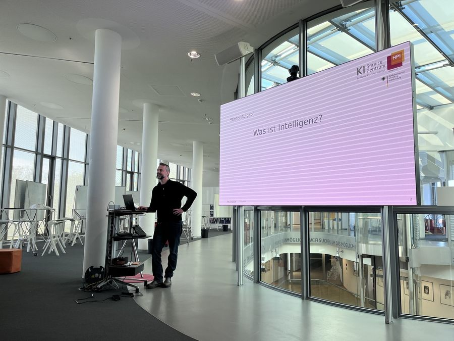
Workshops and talks explaining artificial intelligence: AI fundamentals, machine learning, Generative AI and LLMs. Held at the KI-Servicezentrum Berlin-Brandenburg of the Hasso Plattner Institute, among others.
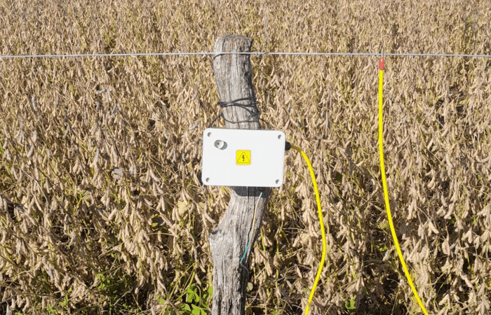
Remote watchdog for electric fences in the field. A custom electronic circuit measures the fence voltage, temperature and humidity and reports by SMS over GSM: alerts when a value leaves its range, status on request, low-power sleep between readings. Electronics, firmware and field deployment.
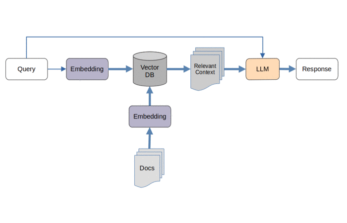
Open-source tool to chat with and semantically search your own documents, fully local: no data leaves the machine. Local LLMs (Ollama), vector database (ChromaDB), eight retrieval modes. Gradio, Docker.
Also the base of a hands-on RAG workshop: from concepts to a running local RAG system.
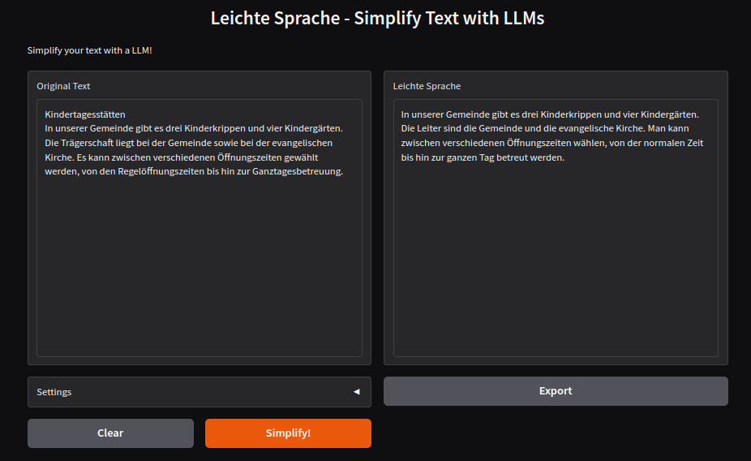
Translation of complex German texts into Leichte Sprache (Easy Language) for the DigitalAgentur Brandenburg. Local open LLMs fine-tuned on the client's data, prompt engineering. Open source.
Multi-purpose conversational assistant based on Large Language Models (LLMs). Natural Language Processing (NLP).
Cattle detection, tracking and counting on aerial images via Computer Vision and Neural Networks.
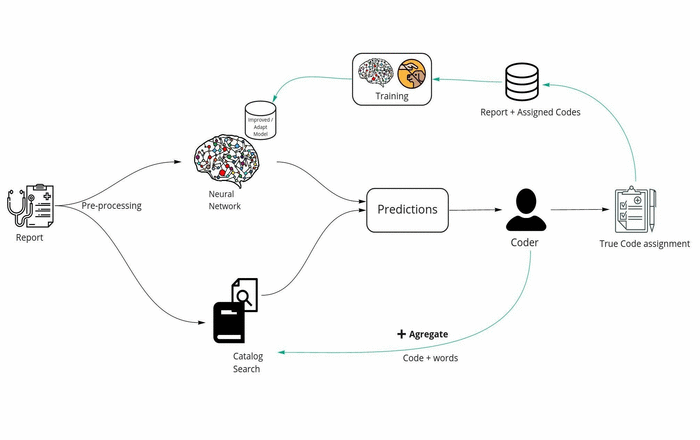
Microservice for classification of clinical documents according to ICD codes. Hybrid system including machine learning and statistical search. TF-IDF. Natural Language Processing.
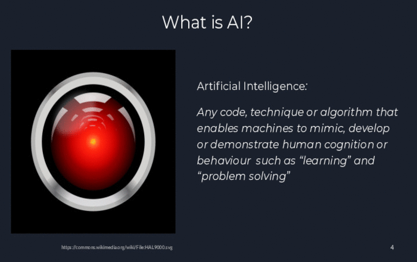
Artificial Intelligence lecture at the philosophers' colloquium "Phencoco"
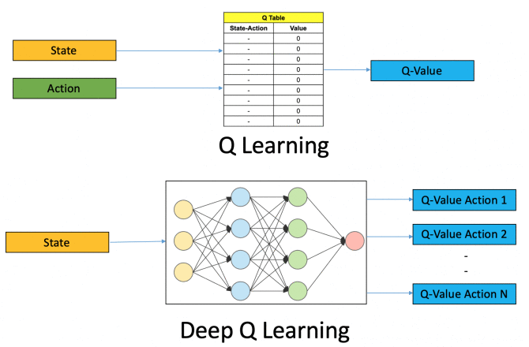
Educational self-learning board game applying Deep Reinforcement Learning.
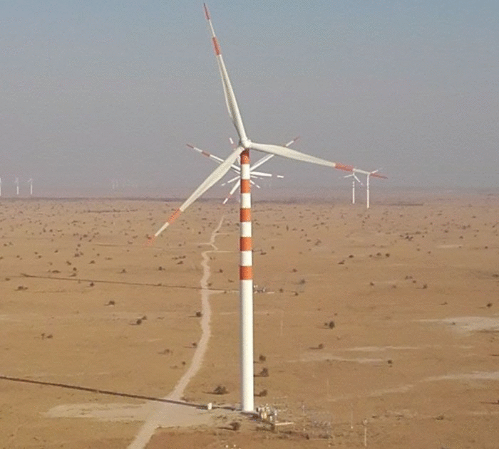
Tool for automating the analysis of wind turbine sensor data for anomaly detection and generation of statistical data for certification purposes. Matlab.
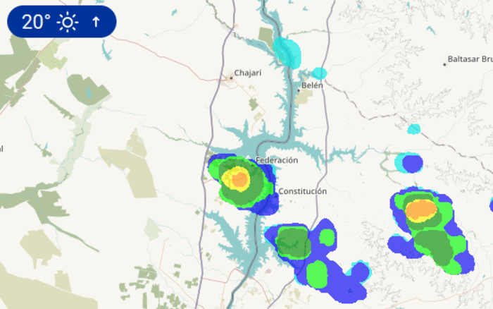
Online machine learning system on time series. It collects forecast data of several weather services for given locations, validates it via user input or a locally installed weather station, and learns to better predict future warnings.
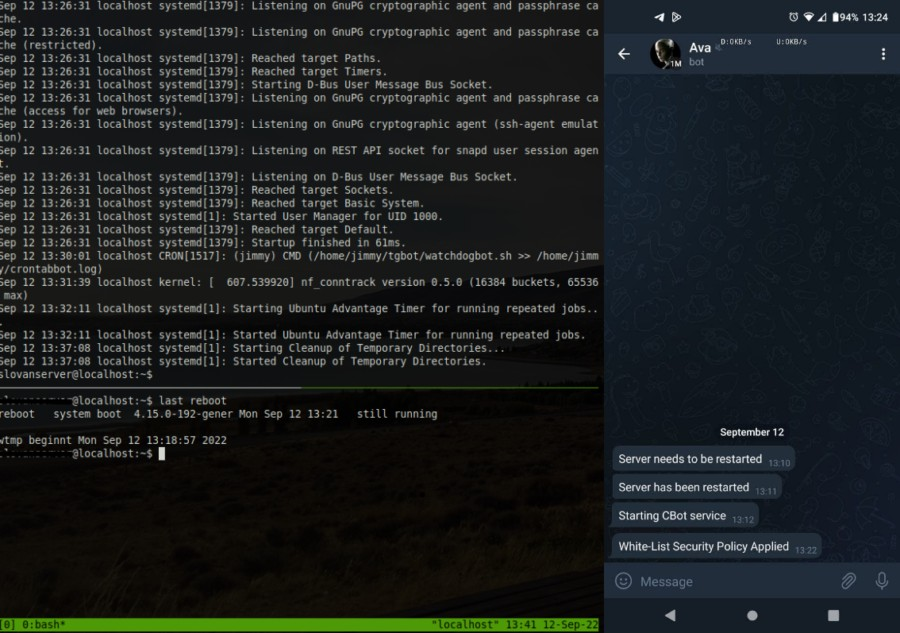
Watchbot for guarding servers, restarting services and sending related information.
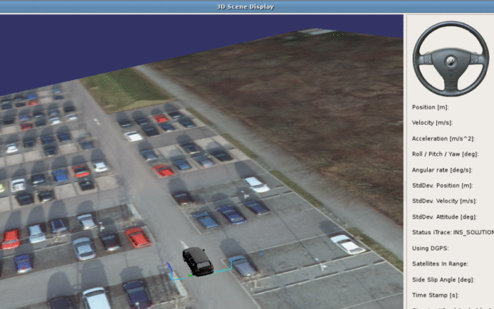
Transmission, processing and analysis of sensor data (LIDAR scanner) for lane detection and tracking. Location concept development and simulation. Data fusion between sensor data and aerial images.
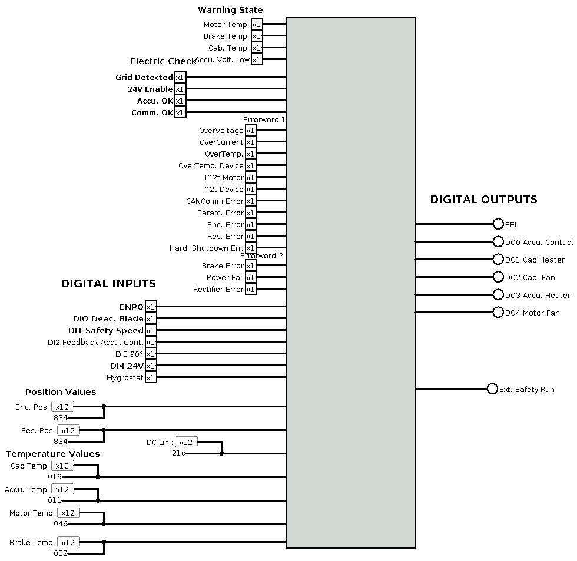
Tool for simulating the logic behaviour of a pitch frequency converter of wind turbines.